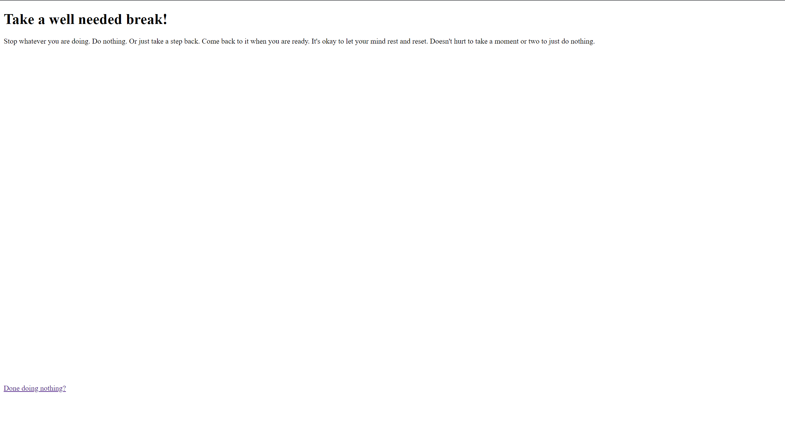
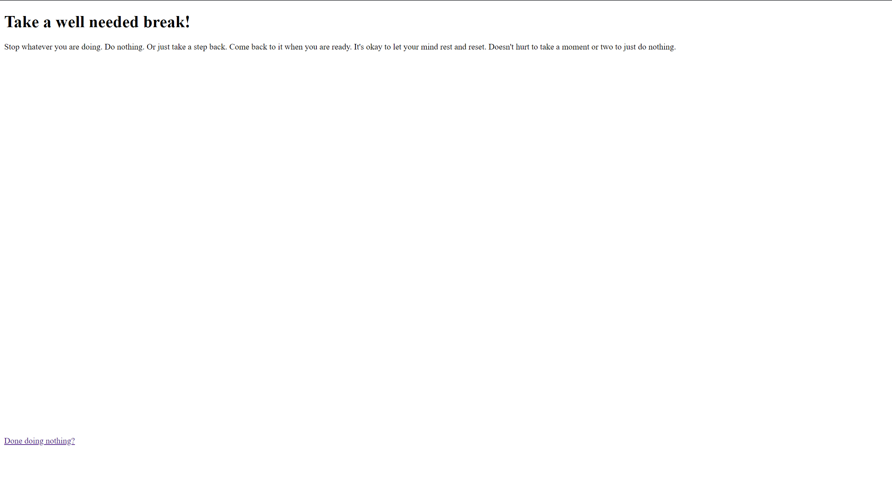

CHALLENGE: The challenge was to create and connect
a series of pages around a topic, story, or experience,
with using links, images, and pages to tell the story
in a modern, hypertext, yet poetic way.
SOLUTION: My website takes its user and tells them to
take a break. In a busy world where we are always
doing something and thinking about something, we
often need reminders that it's time for a break.
This site runs through options you can take for your
break, from breathing to taking a walk, to
reprioritizing. It's very important to just unclench
your jaw once in a while to relax.
LINK: nguyenkatalina.github.io/
 
